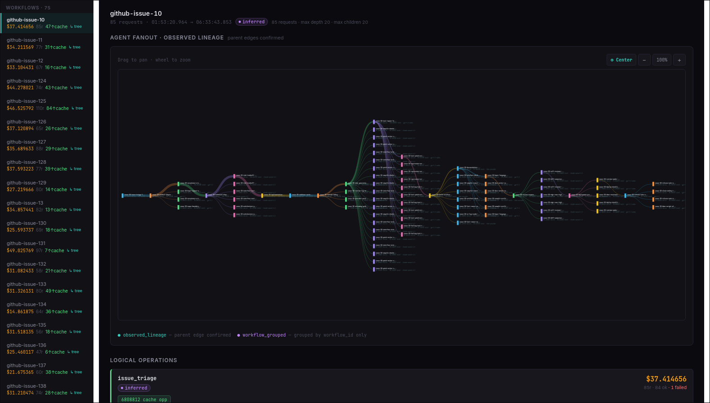
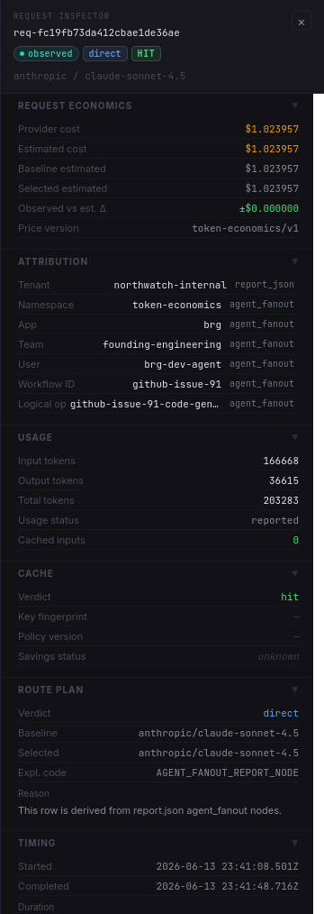
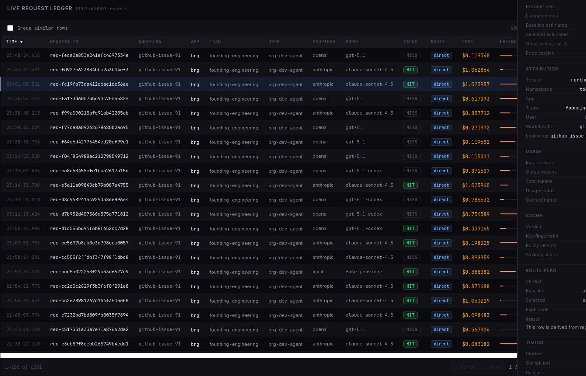

Spend reconstruction
Expected baseline vs actual cost, workflow amplification, retry/fallback/branch waste, and modeled opportunity.
Bring one expensive AI workflow. Blackridge reconstructs token economics across apps, teams, tenants, retries, fallback paths, duplicate requests, and model choices, then gives engineering the evidence needed to fix the first problem.
Screenshots show the kind of evidence review produced during an assessment, using seeded report data.
Expected baseline vs actual cost, workflow amplification, retry/fallback/branch waste, and modeled opportunity.
Request-level rows, lineage, route decisions, token economics, attribution confidence, and data-quality gaps.
Recommended engineering actions with severity, estimated impact, confidence, and supporting event evidence.
A spend-forensics report with summary, findings, assumptions, and remediation plan.
Request, model, retry, fallback, attribution, and spend context for the scoped workflow.
Findings for applicable waste classes, including observed vs modeled savings ranges where supported.
Attribution coverage, confidence notes, data-quality gaps, and supporting evidence rows.
Remediation plan ordered by likely impact, confidence, and engineering feasibility.
Supporting request, event, pricing, model, and workflow context that engineering can inspect.
Findings review for engineering, platform, AI platform, and finance stakeholders.
Report-only handoff, follow-up investigation, or scoped private deployment discussion.
Blackridge does not just hand over a slide. The assessment produces explorable evidence: workflow traces, request-level economics, attribution, confidence, and source events.



Blackridge is available today for spend-forensics assessments and evidence review. It reconstructs what happened, separates observed waste from modeled opportunity, and ranks fixes for engineering review.
Blackridge does not guarantee savings. It reconstructs available evidence, identifies likely waste patterns, explains confidence and coverage gaps, and recommends fixes engineering can verify.
Observed waste is separated from modeled opportunity so teams can tell measured evidence from estimates.
Missing attribution, sampling, incomplete traces, and provider export gaps are reported instead of hidden.
Ongoing recurring access is available through scoped private deployment work.
One expensive or suspicious AI workflow to inspect during the seven-day assessment.
Existing request logs, gateway exports, provider usage data, traces, or sample event data.
Any available app, team, tenant, customer, workflow, route, or request metadata.
A technical point of contact for data questions, coverage gaps, and evidence interpretation.
You keep the findings, evidence packet, and remediation plan. Your team implements fixes independently.
Blackridge analyzes additional workflows or validates whether fixes reduced spend.
For recurring analysis, Blackridge can run as a private token-economics forensics deployment using logs, traces, gateway exports, provider events, or optional runtime collection.
We will show where the spend went, what drove it, what looks wasted, and which fixes should move first.
This request goes to Northwatch Systems. If the form fails, email sales@northwatch.systems.